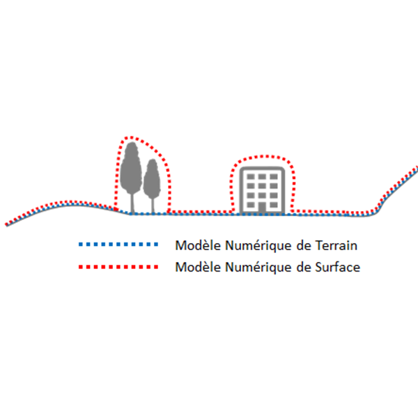

11. Donner du relief à vos cartes ! 🏔️
Concept : Modèle Numérique de Terrain⚓
MNT ; DEM (Digital Elevation Model)
Un Modèle Numérique de Terrain est une description altimétrique du sol nu. Elle peut prendre la forme d'image Raster ou de nuage de point. Pour la France, l'IGN produit 4 MNT :
- La BD ALTI est un MNT disponible au pas de 25m.
- Le RGE ALTI est un MNT disponible au pas de 5 et 1m.
- Le LIDAR HD est un MNT disponible au pas de 0,5m
Ne pas confondre avec ...⚓
Un modèle numérique de surface ou élévation (MNS/MNE) est une description altimétrique du sol et de ses superstructures, c’est-à-dire les objets qui occupent le sol, du fait de l’homme ou non (végétation, bâtiments…).

Réglementaire : Sources et plus d'informations⚓
Sources : https://geoservices.ign.fr/actualites/2020-12-10-MNT-MNS
RGE ALTI : https://geoservices.ign.fr/rgealti
BD ALTI : https://geoservices.ign.fr/bdalti
LIDAR HD : https://geoservices.ign.fr/lidarhd
Sommaire